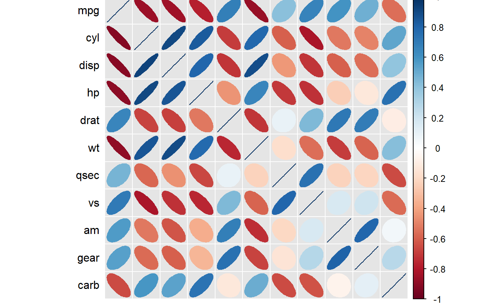

prepare_correlation_graph.RdReads a data frame and presents Pearson correlations above
and Spearman correlations the diagonal using a fancy graph prepared
by the package corrplot.
prepare_correlation_graph(df)
| df | Data frame containing at least two variables that are either numeric or logical and at least five observations. |
|---|
The function directly renders the graph as produced by corrplot.
In addition, it returns a list containing three items:
A data frame containing the correlations
A data frame containing the p-values of the correlations
A data frame containing the number of observations used for the correlations
prepare_correlation_graph(mtcars)#> $df_corr #> mpg cyl disp hp drat wt #> mpg 1.0000000 -0.8521620 -0.8475514 -0.7761684 0.68117191 -0.8676594 #> cyl -0.9108013 1.0000000 0.9020329 0.8324475 -0.69993811 0.7824958 #> disp -0.9088824 0.9276516 1.0000000 0.7909486 -0.71021393 0.8879799 #> hp -0.8946646 0.9017909 0.8510426 1.0000000 -0.44875912 0.6587479 #> drat 0.6514555 -0.6788812 -0.6835921 -0.5201250 1.00000000 -0.7124406 #> wt -0.8864220 0.8577282 0.8977064 0.7746767 -0.75039041 1.0000000 #> qsec 0.4669358 -0.5723509 -0.4597818 -0.6666060 0.09186863 -0.2254012 #> vs 0.7065968 -0.8137890 -0.7236643 -0.7515934 0.44745745 -0.5870162 #> am 0.5620057 -0.5220712 -0.6240677 -0.3623276 0.68657079 -0.7377126 #> gear 0.5427816 -0.5643105 -0.5944703 -0.3314016 0.74481617 -0.6761284 #> carb -0.6574976 0.5800680 0.5397781 0.7333794 -0.12522294 0.4998120 #> qsec vs am gear carb #> mpg 0.41868403 0.6640389 0.59983243 0.4802848 -0.55092507 #> cyl -0.59124207 -0.8108118 -0.52260705 -0.4926866 0.52698829 #> disp -0.43369788 -0.7104159 -0.59122704 -0.5555692 0.39497686 #> hp -0.70822339 -0.7230967 -0.24320426 -0.1257043 0.74981247 #> drat 0.09120476 0.4402785 0.71271113 0.6996101 -0.09078980 #> wt -0.17471588 -0.5549157 -0.69249526 -0.5832870 0.42760594 #> qsec 1.00000000 0.7445354 -0.22986086 -0.2126822 -0.65624923 #> vs 0.79157148 1.0000000 0.16834512 0.2060233 -0.56960714 #> am -0.20333211 0.1683451 1.00000000 0.7940588 0.05753435 #> gear -0.14819967 0.2826617 0.80768800 1.0000000 0.27407284 #> carb -0.65871814 -0.6336948 -0.06436525 0.1148870 1.00000000 #> #> $df_prob #> mpg cyl disp hp drat #> mpg NA 6.112688e-10 9.380328e-10 1.787835e-07 1.776240e-05 #> cyl 4.689582e-13 NA 1.803002e-12 3.477861e-09 8.244636e-06 #> disp 6.370460e-13 2.264855e-14 NA 7.142679e-08 5.282022e-06 #> hp 5.085932e-12 1.867839e-12 6.791336e-10 NA 9.988772e-03 #> drat 5.381347e-05 1.943342e-05 1.613884e-05 2.277988e-03 NA #> wt 1.487610e-11 3.574157e-10 3.346212e-12 1.953795e-07 7.593194e-07 #> qsec 7.055765e-03 6.195832e-04 8.108019e-03 3.105344e-05 6.170251e-01 #> vs 6.191450e-06 1.484058e-08 2.863870e-06 7.125286e-07 1.023343e-02 #> am 8.156989e-04 2.178046e-03 1.352011e-04 4.155768e-02 1.432515e-05 #> gear 1.328681e-03 7.678209e-04 3.334775e-04 6.390322e-02 1.014930e-06 #> carb 4.337570e-05 5.016643e-04 1.430209e-03 1.799847e-06 4.946824e-01 #> wt qsec vs am gear #> mpg 1.293958e-10 1.708199e-02 3.415937e-05 2.850207e-04 5.400948e-03 #> cyl 1.217567e-07 3.660533e-04 1.843018e-08 2.151207e-03 4.173297e-03 #> disp 1.222311e-11 1.314404e-02 5.235012e-06 3.662114e-04 9.635921e-04 #> hp 4.145827e-05 5.766253e-06 2.940896e-06 1.798309e-01 4.930119e-01 #> drat 4.784260e-06 6.195826e-01 1.167553e-02 4.726790e-06 8.360110e-06 #> wt NA 3.388683e-01 9.798492e-04 1.125440e-05 4.586601e-04 #> qsec 2.148388e-01 NA 1.029669e-06 2.056621e-01 2.425344e-01 #> vs 4.129434e-04 6.860828e-08 NA 3.570439e-01 2.579439e-01 #> am 1.453656e-06 2.643506e-01 3.570439e-01 NA 5.834043e-08 #> gear 2.162837e-05 4.182425e-01 1.169934e-01 2.304063e-08 NA #> carb 3.583063e-03 4.150300e-05 9.878823e-05 7.263524e-01 5.312358e-01 #> carb #> mpg 1.084446e-03 #> cyl 1.942340e-03 #> disp 2.526789e-02 #> hp 7.827810e-07 #> drat 6.211834e-01 #> wt 1.463861e-02 #> qsec 4.536949e-05 #> vs 6.670496e-04 #> am 7.544526e-01 #> gear 1.290291e-01 #> carb NA #> #> $df_n #> mpg cyl disp hp drat wt qsec vs am gear carb #> mpg 32 32 32 32 32 32 32 32 32 32 32 #> cyl 32 32 32 32 32 32 32 32 32 32 32 #> disp 32 32 32 32 32 32 32 32 32 32 32 #> hp 32 32 32 32 32 32 32 32 32 32 32 #> drat 32 32 32 32 32 32 32 32 32 32 32 #> wt 32 32 32 32 32 32 32 32 32 32 32 #> qsec 32 32 32 32 32 32 32 32 32 32 32 #> vs 32 32 32 32 32 32 32 32 32 32 32 #> am 32 32 32 32 32 32 32 32 32 32 32 #> gear 32 32 32 32 32 32 32 32 32 32 32 #> carb 32 32 32 32 32 32 32 32 32 32 32 #>